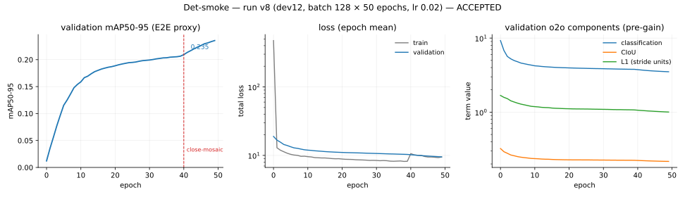

🎯 0.1.0 — Detection¶
What was reproduced¶
The detector as [R1] describes it: a DFL-free dual-head architecture whose one-to-one branch supports NMS-free inference, trained with Small-Target-Aware label assignment, Progressive Loss branch reweighting, and the MuSGD hybrid optimizer.
| mechanism | [R1] reference | implementation |
|---|---|---|
| dual head, DFL-free | sec. 3.2, Fig. S2 | models/heads/detect.py — one-to-many and one-to-one branches share a backbone/neck forward; boxes are direct ltrb distances, no distribution bins |
| NMS-free E2E decode | sec. 3.2.2 | decode/topk_e2e.py — top-k over the one-to-one branch, no suppression op |
| TAL assignment | R4 (arXiv:2108.07755) | assign/tal.py — t = s^alpha * u^beta, alpha 1, beta 6, per-GT target normalization |
| STAL small-target assignment | sec. 3.3.3 | assign/stal.py — size-aware surrogate boxes widen the candidate set for small ground truths |
| Progressive Loss | sec. 3.3.1 | losses/progressive.py — branch weight ramps alpha_init 0.8 -> alpha_final 0.1 as a fraction of the epoch budget |
| MuSGD | sec. 3.5 | optim/musgd.py + optim/newton_schulz.py — Muon/SGD hybrid at w_muon 0.5 / w_sgd 0.5 |
Architectural fidelity is gated rather than asserted: test_param_flops.py holds all five scales within ±2% params and ±5% FLOPs of [R1, Table 7] (n: 2.4M/5.4G … x: 55.7M/193.9G).
Det-smoke acceptance¶
The Det-smoke tier (blueprint sec. 10 tier A): n-scale, ~50 COCO epochs, ~1 GPU-day.
Run v8 — dev12, COCO 2017 train, batch 128, lr 0.02, MuSGD, warmup 3 epochs then linear decay to lr0 * 0.01, close-mosaic for the final 10, EMA (decay 0.9999, tau 2000), 16-mixed, seed 0, 50 epochs = 46,250 steps on one RTX PRO 6000, ~8m45s/epoch.
Evaluated on the full COCO val2017 (5000 images) with scripts/eval_det.py, which runs one forward per batch and decodes both paths from it, scoring with torchmetrics MeanAveragePrecision on the faster_coco_eval backend:
| weights | path | mAP50-95 | mAP50 | mAP75 | mAP_S | mAP_M | mAP_L | mAR_100 |
|---|---|---|---|---|---|---|---|---|
| EMA | NMS | 25.30 | 38.12 | 26.94 | 11.86 | 27.09 | 33.88 | — |
| EMA | E2E | 23.84 | 36.00 | 25.15 | 11.64 | 25.86 | 31.38 | 46.07 |
| raw | NMS | 25.33 | 38.45 | 27.05 | — | — | — | — |
| raw | E2E | 24.23 | 36.72 | 25.82 | 11.24 | — | — | — |
| criterion | required | observed | |
|---|---|---|---|
| stable training | no divergence | monotonic validation descent, 50/50 epochs | ✓ |
| val mAP50-95 | > 25 | 25.30 EMA-NMS, 25.33 raw-NMS | ✓ |
| E2E within NMS path | ~1.5 AP | 1.46 EMA, 1.11 raw | ✓ |
| Phase ≤5 gates | green | 474 tests, 5/5 goldens | ✓ |
The E2E deficit is itself a reproducible claim. [R1 sec. 4.4] reports 0.6–0.8 AP between the NMS-free and NMS paths. This run measures 1.11 AP on raw weights and 1.46 on EMA — the right sign and the right order of magnitude, wider than the paper's figure. Whether the residual gap closes at longer schedules is a Det-ablations question, recorded here rather than explained away.

Run v8. Left: the epoch-end E2E mAP proxy logged during training (letterbox coordinates — the acceptance figure above comes from the standalone evaluator). Middle: epoch-mean totals, log axis. Right: the one-to-one branch's pre-gain components; the L1 term is in stride units.
What went wrong first, and why it matters¶
Three earlier attempts failed the same criterion, and the failure is more instructive than the pass.
| run | epochs | mAP50-95 (EMA NMS) | mAR_100 |
|---|---|---|---|
| v2 — attempt 1 | 44/50 | 3.96 | 16.6 |
| v4 — attempt 2 | 100 | 6.28 | 23.7 |
| v7 — stale wheel | 100 | 4.00 | — |
| v8 — attempt 3 | 50 | 25.30 | 46.07 |
Attempt 2's curves carry the signature plainly: the total loss descends the whole way while the components sit flat — its validation L1 term never moves from ~39 between epochs 30 and 90, and validation classification worsens from 6.88 to 7.31 while the training figure falls. A loss going down while nothing underneath it moves is what a mis-scaled term looks like.
Root cause 1 — coordinate frame of the L1 term (A13, WP-078). The head predicts ltrb distances in stride units; the module fed the loss pixel boxes. The legacy DFL-field gain (6.0) is calibrated for the stride frame, so the term ran 8–32× large. Measured on the attempt-2 endpoint, the one-to-one objective decomposed as 97.1% L1, 1.7% classification, 1.1% CIoU — and the gain-weighted arithmetic reproduces the logged validation total exactly, which is what turned a hypothesis into a diagnosis.
The consequence was visible in the classifier, not the boxes. Probed on the pre-fix checkpoint: predicted probability 0.076 at the assigned positive's own class, only 8 of 67,200 anchors above 0.25 confidence, and a mean per-anchor confidence below the 0.01 prior the head was initialized to (A30). Boxes were tight; the scores that rank them were noise. mAP is a ranking metric, so the runs sat in single digits regardless of localization quality.
Dividing the L1 differences by each positive anchor's stride moved classification from 1.7% to 23.0% of the objective.
Root cause 2 — augmentation RNG collapse (WP-079). _TrainPipeline seeds one generator at construction, in the parent process, and that copy never advances because the parent never calls __getitem__ when workers are used. Every worker therefore replayed one identical augmentation-parameter stream (diversity 1/num_workers), and once workers became non-persistent for unrelated memory reasons (WP-076) they restarted from that same state every epoch. At 32 workers × 100 epochs the run drew roughly 1/3200 of the intended augmentation parameters. Re-seeding each worker from WorkerInfo.seed restores per-worker, per-epoch streams while keeping the run reproducible from the datamodule seed.
What this cost, and the lesson taken. Both defects are semantic — nothing crashed, no test failed, every gate stayed green through three failed runs totalling ~35 GPU-hours. Unit tests that check shapes and finiteness cannot see a term that is the wrong size or a random stream that repeats. The regression net for 0.2.0 onward therefore pins invariants (loss-term balance, augmentation stream divergence) rather than only shapes, so that a semantic break fails in minutes instead of surfacing as a disappointing mAP a day later.
Assumption outcomes¶
Assumptions the detector tier exercised. Full register in ASSUMPTIONS.md.
| id | subject | outcome |
|---|---|---|
| A8 | LR schedule shape | validated — warmup 3 epochs + linear decay to lr0*lrf carries the acceptance run; the constant-LR deferral it replaced plateaued at 3.96 |
| A13 | loss gains and L1 coordinate frame | revised, then validated — gains 7.5/0.5/6.0 from [R1 Table S2] kept; frame corrected from pixels to stride units |
| A30 | classification bias prior init | validated — -log((1-pi)/pi), pi 0.01, per R24 sec. 5.1; without it the first MuSGD step killed the network |
| A2 | TAL exponents | held at alpha 1, beta 6; not independently ablated at A-tier |
| A31 | warmup convention | absorbed into A8 |
| A32 | train-time resampling filter | non-antialiased fused warp; no acceptance-visible effect |
| A33 | uint8 batch transport | validated — no acceptance-visible effect, 4× smaller IPC |
Deviations from the paper¶
- Epoch budget. ~50 epochs at n-scale, against the paper's from-scratch 500/600-epoch schedules. Det-smoke is a smoke tier by design; the headline comparison against [R1 Table 4] is Det-C and remains a stretch goal.
- No Objects365 pretraining, no evolutionary hyperparameter search (D2).
- Batch-scaled learning rate. lr 0.02 at batch 128, linear scaling from the batch-64 recipe. The unscaled lr 0.01 run at the same batch is attempt 2's configuration and is not separable from the loss-frame defect it also carried, so this project has no clean measurement of the scaling on its own.
- E2E deficit wider than published — 1.11 AP raw against 0.6–0.8 in [R1 sec. 4.4]; see above.
Reproducing this result¶
pip install lucid-yolo==0.0.1.dev12
lucid-download --data-root <root> --splits train val --verify
lucid-yolo fit --config det_smoke.yaml \
--data.data_root <root> --data.batch_size 128 --data.num_workers 32 \
--data.prefetch_factor 1 --model.lr 0.02 --trainer.max_epochs 50 \
--trainer.precision 16-mixed
python scripts/eval_det.py <checkpoint> --data-root <root>
These are the commands as run, at the version named, and are left unedited for that reason. On 0.3.0 and later the same three steps are lucid-data download --data_root <root> --splits '[train,val]' --verify true, the unchanged lucid-yolo fit, and lucid-eval --checkpoint <checkpoint> --data_root <root> (WP-096). lucid-download kept accepting the dashed flags above through 0.3.0; it was removed in 0.4.0 as that release said it would be (WP-110), so on 0.4.0 and later the block above must be read through those replacements rather than run as written.
Seed 0 throughout. Cross-platform bitwise reproduction is not claimed (A26: libm last-bit rounding differs across OS and architecture); the run config, seeds, and metric reports are archived under .experiments/det_smoke/.